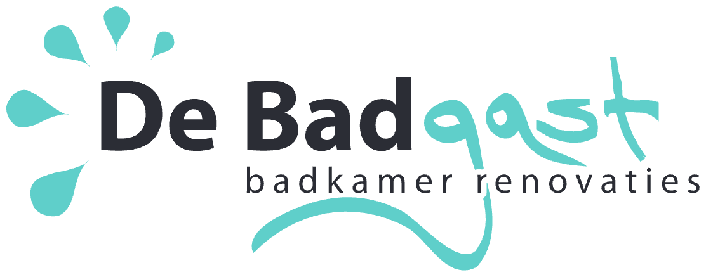

Bruine tegels met mozaïekbanen als accent, een inloopdouche achter glas en twee wastafels naast elkaar.
5 foto's van dit project. Klik op een foto om hem groot te bekijken.
Ik kom vrijblijvend langs, meet op en denk met u mee. Geen verkooppraatje, wel een eerlijk verhaal over wat er kan.
De planning loopt gemiddeld 6 tot 12 maanden vooruit, dus plan op tijd.